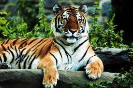

Help The Tigers Of Sundarban
They Are So Cute
The tiger (Panthera tigris) is the largest living cat species and a member of the genus Panthera. It is most recognisable for its dark vertical stripes on orange fur with a white underside. An apex predator, it primarily preys on ungulates, such as deer and wild boar. It is territorial and generally a solitary but social predator, requiring large contiguous areas of habitat to support its requirements for prey and rearing of its offspring. Tiger cubs stay with their mother for about two years and then become independent, leaving their mother's home range to establish their own.
The tiger was first scientifically described in 1758. It once ranged widely from the Eastern Anatolia Region in the west to the Amur River basin in the east, and in the south from the foothills of the Himalayas to Bali in the Sunda Islands. Since the early 20th century, tiger populations have lost at least 93% of their historic range and have been extirpated from Western and Central Asia, the islands of Java and Bali, and in large areas of Southeast and South Asia and China. What remains of the range where tigers still roam free is fragmented, stretching in spots from Siberian temperate forests to subtropical and tropical forests on the Indian subcontinent, Indochina and a single Indonesian island, Sumatra.The tiger is listed as Endangered on the IUCN Red List. As of 2015, the global wild tiger population was estimated to number between 3,062 and 3,948 mature individuals, with most populations living in small isolated pockets. India currently hosts the largest tiger population. Major reasons for population decline are habitat destruction, habitat fragmentation and poaching. Tigers are also victims of human–wildlife conflict, due to encroachment in countries with a high human population density.
The tiger is among the most recognisable and popular of the world's charismatic megafauna. It featured prominently in the ancient mythology and folklore of cultures throughout its historic range and continues to be depicted in modern films and literature, appearing on many flags, coats of arms and as mascots for sporting teams. The tiger is the national animal of India, Bangladesh, Malaysia and South Korea.
Go To Tiger
Royal bengal tiger is our national animal.
It is look like bigcat
Royal Bengal Tiger
The Big cat
The tiger (Panthera tigris) is the largest living cat species and a member of the genus Panthera. It is most recognisable for its dark vertical stripes on orange fur with a white underside. An apex predator, it primarily preys on ungulates, such as deer and wild boar. It is territorial and generally a solitary but social predator, requiring large contiguous areas of habitat to support its requirements for prey and rearing of its offspring. Tiger cubs stay with their mother for about two years and then become independent, leaving their mother's home range to establish their own.
Go To Tiger

The tiger (Panthera tigris) is the largest living cat species and a member of the genus Panthera. It is most recognisable for its dark vertical stripes on orange fur with a white underside. An apex predator, it primarily preys on ungulates, such as deer and wild boar. It is territorial and generally a solitary but social predator, requiring large contiguous areas of habitat to support its requirements for prey and rearing of its offspring. Tiger cubs stay with their mother for about two years and then become independent, leaving their mother's home range to establish their own.

The tiger (Panthera tigris) is the largest living cat species and a member of the genus Panthera. It is most recognisable for its dark vertical stripes on orange fur with a white underside. An apex predator, it primarily preys on ungulates, such as deer and wild boar. It is territorial and generally a solitary but social predator, requiring large contiguous areas of habitat to support its requirements for prey and rearing of its offspring. Tiger cubs stay with their mother for about two years and then become independent, leaving their mother's home range to establish their own.
Royal Bengal Tiger
The Big cat
The tiger (Panthera tigris) is the largest living cat species and a member of the genus Panthera. It is most recognisable for its dark vertical stripes on orange fur with a white underside. An apex predator, it primarily preys on ungulates, such as deer and wild boar. It is territorial and generally a solitary but social predator, requiring large contiguous areas of habitat to support its requirements for prey and rearing of its offspring. Tiger cubs stay with their mother for about two years and then become independent, leaving their mother's home range to establish their own.
Go To Tiger